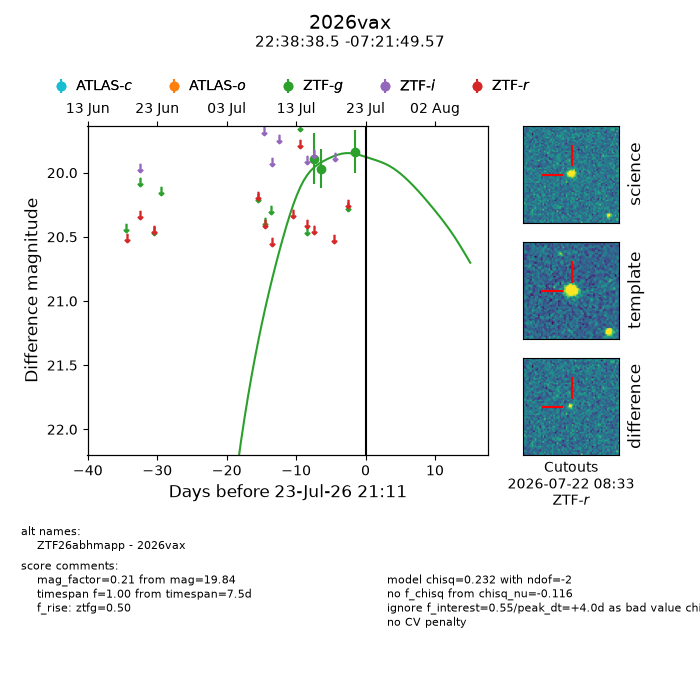
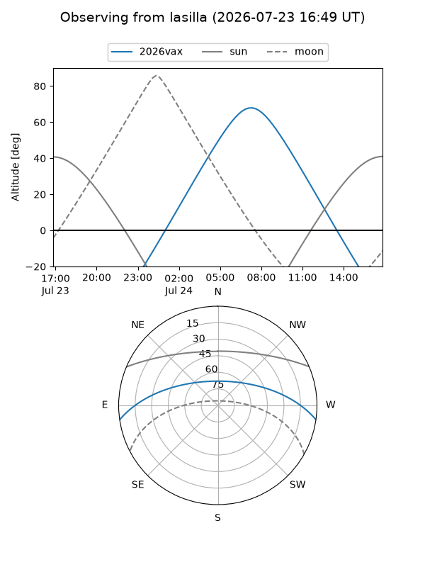
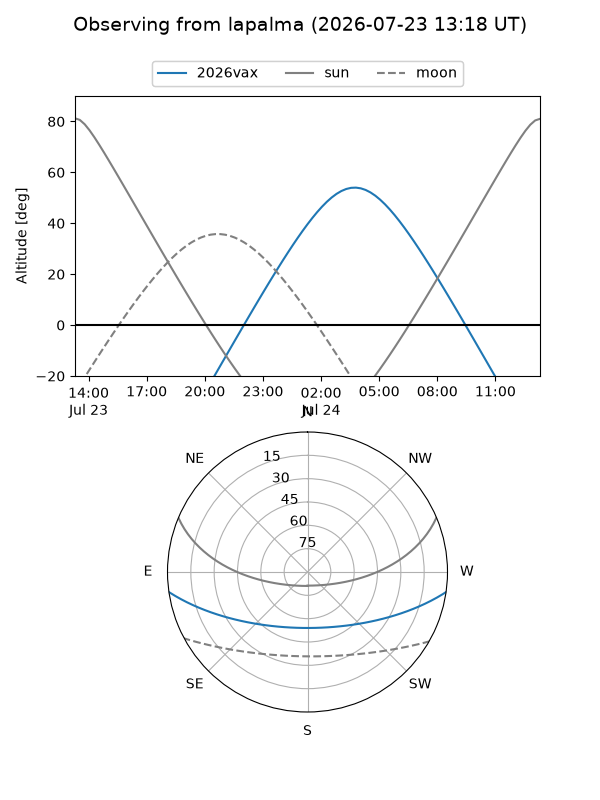
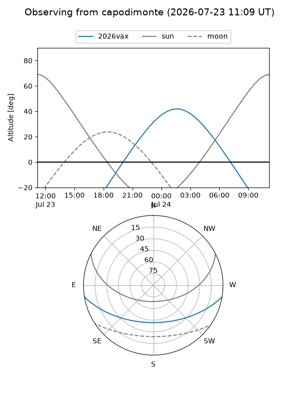
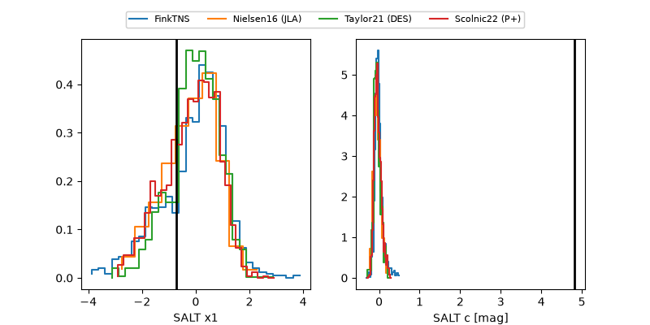

2026vax
Target 2026vax at 2026-07-23 21:14
Aliases and brokers:
FINK-ZTF: ztf.fink-portal.org/ZTF26abhmapp
Lasair-ZTF: lasair-ztf.lsst.ac.uk/objects/ZTF26abhmapp
ALeRCE-ZTF: alerce.online/object/ZTF26abhmapp
YSE-PZ: ziggy.ucolick.org/yse/transient_detail/2026vax
TNS name: wis-tns.org/object/2026vax
Direct TNS query: direct search
alt names
ZTF26abhmapp (ztf,fink_ztf)
2026vax (tns,yse)
Coordinates:
equatorial (ra, dec) = 339.6605,-7.36377
equatorial (HMS+DMS) = 22:38:38.52,-07:21:49.57
galactic (l, b) = (58.8880,-52.84641)
Flags:
TNS type: nan
peak dt: +4.0
Photometry:
last ztfg=19.84
3 ztfg detections
Lightcurve

Visibility



Additional plots
